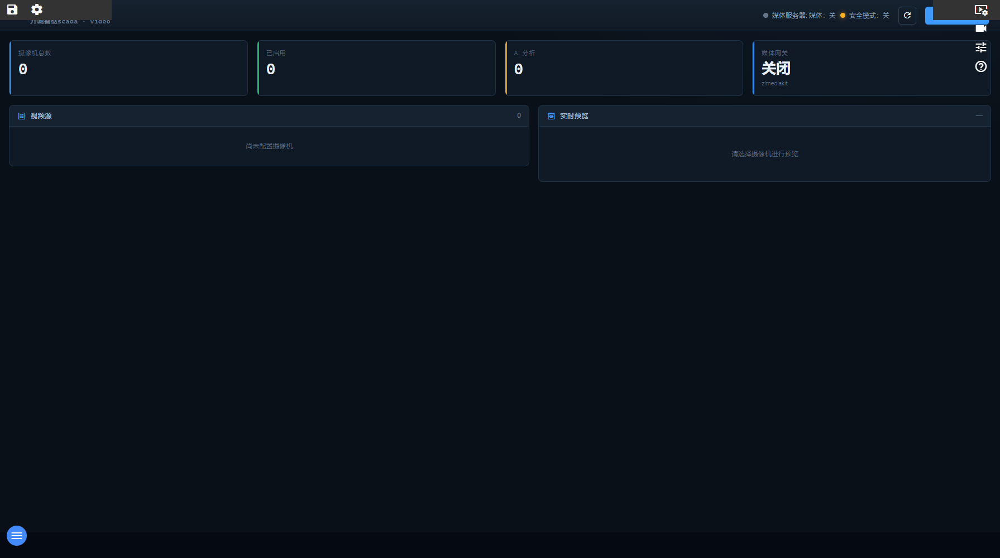

16. 摄像机管理
入口：顶部工具条「摄像机」或 /cameras
功能概述
摄像机模块集中管理视频源：登记 RTSP/GB28181 摄像机、测试连通性、预览画面，并可把 AI 分析结果接回平台。
界面说明

摄像机管理（当前交付版实际截图）
界面上真实可见的元素（按当前交付版实测）
| 区域 | 实际内容 |
|---|
| 按钮 / 图标 | 保存项目、编辑项目、视频墙、视频监控、传感器标定、开诚智枢帮助、刷新、add添加摄像机 |
逐步操作
- 进摄像机页点“添加”，填名称、厂商、地址与凭据。
- 点“测试”验证取流是否成功，成功后状态变绿。
- 点“预览”确认画面正确（低带宽环境建议用快照模式）。
- 需要 AI 分析时，填分析服务地址并启用。
- 登记完成后，视频墙与监控画面即可绑定这路摄像机。
常见问题
- GB28181 设备点播失败？需要配置 ZLMediaKit 媒体网关（mediaServer）。
- 画面黑屏？先用“测试”看取流是否成功，再检查编码/分辨率。
- 凭据安全吗？摄像机密码不会以明文出现在接口返回里。
返回目录